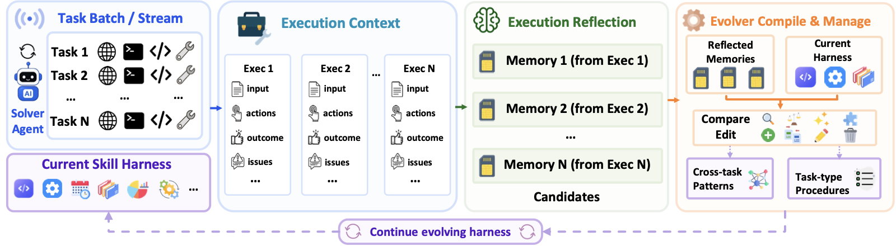
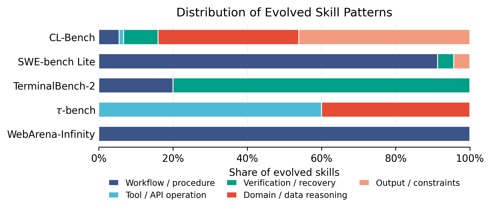

Evo-Harness: Context-to-Harness Skill Compilation for Self-Evolving Agents
Paper: arXiv 2608.15071 (v1, Aug 15 2026), by Tianxin Wei, Zhan Shi, Minhua Lin, Bing He, Zewen Liu, Yisi Sang, Yuanchen Bei, Xuying Ning, Jiaru Zou, Ting-Wei Li, Xiao Lin, Yanjun Zhao, Chi Wang, Benoit Dumoulin, Dakuo Wang, Jingrui He, Hanqing Lu. The thread attributes the team to UIUC and Amazon (consistent with the author list; affiliations not in my fetched sources). Grounded in the full TeX source from arXiv. Not to be confused with EvoHarness-RL (arXiv 2608.05446) — see How it connects.
TL;DR
- Formulates online harness learning: a frozen agent faces a stream of task batches, each task seen once, and improves only by updating an external harness of reusable guidance between batches. The instantiation, Evo-Harness, is a two-stage "context-to-harness skill compilation": a solver reflects on each execution context and proposes candidate memories (only on failure/negative feedback), and an evolver compiles them against the current harness via Add/Merge/Revise/Skip edits into two complementary levels — cross-task patterns and task-type procedures.
- With Claude Opus 4.6 frozen, it beats No-Evolve and six experience/memory/skill baselines on all five benchmarks: TerminalBench-2 62.92 → 73.03, CL-Bench 29.54 → 34.02, SWE-bench Lite 63.67 → 67.00, τ-bench 72.73 → 76.97, WebArena-Infinity 72.50 → 76.25. Several baselines underperform No-Evolve — external experience reuse is not automatically beneficial.
- The analysis is the real payload: self-generated feedback makes evolution worse than not evolving at all (CL-Bench 29.54 → 27.96, SWE 63.67 → 61.67), grounded verifier/test feedback is what makes harness updates safe; skills evolved by Sonnet transfer up to an Opus solver (76.0) but don't help Sonnet itself (55.3–55.7 vs 58.0 No-Evolve) — harness transfer depends on the solver's capability to exploit the guidance.
Why this matters
This sits at the center of your self-improving cluster: frozen weights, an external harness as the learning medium, and — unlike most skill-library papers you track — an explicitly online, one-shot protocol. Prior experience-reuse work (ExpeL-style, memory banks, offline skill mining) assumes multiple trajectories per task or offline mining. Evo-Harness's setting is the deployment-realistic one: every task arrives once, its execution context is rich but noisy, and whatever you don't compile into reusable form is gone.
The headline finding is also the field's current fault line. Your rethinking-harness-evolution item argues harness-evolution gains are often covert test-time scaling plus test-set adaptation; agent-skills-harmful catalogues how loaded skills actively hurt. Evo-Harness lands on the same nerve from the constructive side: it shows when the loop works (grounded external feedback, failure-focused reflection, an evolver that curates rather than appends) and demonstrates the failure case in-house — ungrounded self-judgment produces net-negative evolution. That convergence, from a paper whose goal is to make the loop work, is worth more than the benchmark wins.
The core idea
Retrieval of past cases is the wrong abstraction for one-shot streams: raw trajectories entangle reusable lessons with task-specific artifacts, and retrieving them replays the noise along with the signal. Evo-Harness instead treats the harness as a compilation target. Reflection extracts failure-grounded candidate signals from each execution; a separate evolver pass decides — by comparing candidates against the existing harness and each other — what is a genuinely cross-task regularity, what is a task-type-local procedure, and what is noise to drop. Learning lives in the edit policy, not in storage.

Figure (main) from the paper: the solver uses harness \(\mathcal{H}_i\) on batch \(B_i\); each execution context is reflected into candidate memories; the evolver updates the harness for later batches.How it works
Setup. Task batches \(\{B_1,\ldots,B_K\}\) arrive sequentially. Before batch \(B_i\) the agent holds a harness \(\mathcal{H}_i=\{h_i^1,\ldots,h_i^{n_i}\}\) of guidance entries. Per task, a compact subset is selected and injected under a budget:
where \(b\) is the injection budget. The frozen solver \(\mathcal{A}\) executes, yielding the execution context \(c_{i,j}=(x_{i,j},\tau_{i,j},y_{i,j},f_{i,j})\) — instruction, action trajectory, outcome, and feedback \(f\) (verifier results, unit tests, tool diagnostics, judge output). Online harness learning is the map \(\mathcal{H}_i\to\mathcal{H}_{i+1}\) with solver parameters fixed.
Stage 1 — execution reflection. Only when an execution fails or gets negative feedback does the solver produce a candidate memory \(r_{i,j}=\mathrm{Reflect}(c_{i,j})\), structured as
— what was learned, when it applies, what execution evidence backs it, and a guess at its scope. Failures are targeted deliberately: they expose the solver's current boundary (wrong assumptions, missing constraints, bad tool use, weak verification), and skipping successes avoids polluting the harness with task-specific detail. Reflection does not see the current harness; it is a candidate signal, not an update.
Stage 2 — harness evolution. After batch \(B_i\), the evolver receives the batch's candidates \(\mathcal{R}_i\) and the harness, and emits edits: for each candidate,
Two compilation passes produce the two skill classes the thread described: CompileCrossTask compares memories across tasks to extract shared operational structure (general skills — transferable cross-task patterns), while CompileTaskType preserves localized guidance for recurring task formats and interfaces (topic skills). The levels emerge from the evolver's comparisons rather than predefined labels; batch-level updates make the cross-task pass possible (\(|B_i|=1\) reduces to task-type-only updating).
# Evo-Harness (Algorithm 1 of the paper, verbatim structure)
Input: task batches {B_1..B_K}, frozen solver A, initial harness H_1
for i = 1..K:
R_i <- {}
for each task x in B_i:
S <- Select(x, H_i; b) # pick <= b harness entries
x~ <- Inject(x, S) # inject guidance into context
(tau, y, f) <- A(x~) # frozen solver executes
c <- (x, tau, y, f) # execution context
r <- Reflect(c) # candidate memory (on failure /
R_i <- R_i ∪ {r} # negative feedback only)
O_type <- CompileTaskType(H_i, R_i) # topic skills: local procedures
O_cross <- CompileCrossTask(H_i, R_i) # general skills: shared patterns
H_{i+1} <- ApplyEdits(H_i, O_type ∪ O_cross) # Add/Merge/Revise/Skip
Output: evolved harness H_{K+1} and task results
The design is deliberately modular — solver, evolver, feedback source, and initial harness are decoupled — because the paper's stated goal is to use the harness as an analytical instrument for what drives online self-improvement, not just a pipeline.
Results
Five benchmarks under a sequential continuous-learning protocol, Claude Opus 4.6 as default solver and evolver; baselines are AWM, two Dynamic Cheatsheet variants, Evo-Memory, ACE, and XSkill under the same splits. Evo-Harness wins everywhere (see TL;DR numbers); the largest gain is TerminalBench-2 (+10.11 absolute), where tasks expose reusable procedural structure — inspect, execute, interpret errors, recover. Meanwhile AWM, DC, and ACE each lose to No-Evolve on at least one benchmark.
The diagnostic results, which are the paper's stated focus:
- Model generality (CL-Bench, five solvers): overall gains for every solver, but graded by capability — Opus 4.7/4.6/4.5 gain +3.7/+4.5/+3.8, Kimi-K2.5 +1.1, GPT-OSS +0.8. Procedural Task Execution improves for every model (up to +9.8); exploratory Empirical Discovery & Simulation is unstable (−2.5 for Opus 4.6). Stronger solvers are better at using evolved guidance.
- Skill-class ablation: on CL-Bench, Topic-Only (33.70) ≈ full (34.02) while General-Only drops to 30.28; on SWE-bench Lite the pattern inverts (General-Only 66.67 ≈ full 67.00, Topic-Only 64.33). The two classes are asymmetric complements: heterogeneous reasoning wants local procedures, repo debugging wants broad ones.
- Feedback grounding (the key finding): Self-Generated feedback (LLM judges its own success) underperforms No-Evolve on both testbeds — CL-Bench 27.96 vs 29.54, SWE 61.67 vs 63.67. Minimal env pass/fail (29.86 / 67.33) and Standard diagnostics (34.02 / 67.00) are both safe; richer diagnostics win on reasoning tasks but sparse signals slightly win on SWE, plausibly because detailed error text overfits skills to specific failures.
- Transfer: skills evolved by Sonnet 4.5 on a train split lift an Opus 4.7 solver on held-out tasks (68.8 → 73.4; online updating 75.0). Cross-model evolution helps the Opus solver (Cross 76.0 > Same 75.3) but both pairings hurt the Sonnet solver (55.3/55.7 < 58.0 No-Evolve).

Figure from the paper: the evolved harness mirrors each benchmark's operational demands — workflow/procedure skills for WebArena, verification/recovery for TerminalBench-2, tool/API + domain reasoning for τ-bench — rather than accumulating generic guidance.How it connects
- evoharness-rl (2608.05446) — the confusable near-namesake, also UIUC-linked. Disambiguation: EvoHarness-RL trains the model (SFT + cost-aware GRPO) to decide when to touch harness state via meta-actions sharing the action budget; Evo-Harness keeps weights frozen and evolves what the harness contains via an LLM evolver between batches. One learns harness usage in weights, the other learns harness content in text. They're composable in principle: an RL-trained usage policy over an Evo-Harness-compiled store. Notably both find internalization/capability effects: EvoHarness-RL's harness-call annealing and Evo-Harness's solver-capability-gated transfer are two views of "guidance only helps a model that can absorb it."
- agent-skills-harmful — supplies the failure taxonomy for exactly what Evo-Harness's evolver must avoid: topically relevant skills whose examples become treated as requirements (68.8% of functional failures) and mandatory-procedure bloat. Evo-Harness's Skip/Merge curation and failure-only reflection are implicit countermeasures, but nothing here measures skill-induced failures — running SkillTriage over an evolved Evo-Harness store is the obvious follow-up.
- msce-memory-to-skills — closest philosophical sibling: both refuse raw-trace retrieval and crystallize experience into governed skills with evidence links and applicability scopes (MSCE's metadata ≈ Evo-Harness's lesson/trigger/evidence/scope_hint). MSCE adds value backfilling from sparse terminal feedback; Evo-Harness adds the online one-shot protocol and the feedback-grounding ablation MSCE lacks.
- living-harness — same frozen-actor, post-episode-evolution shape, but with a fixed Evolution-SOP and hard commit gates (schema/scope/evidence checks) where Evo-Harness has an LLM evolver with soft edit ops. Living-Harness's gates are the disciplined version of Skip; its 9.7-point SOP ablation and Evo-Harness's self-feedback collapse are the same lesson — unstructured accumulation is the enemy.
- darwinx-harness-evolution — the population-level alternative: an archive of harness lineages with a preserve-and-extend contract instead of one curated stream. DarwinX's proxy-saturation-vs-held-out gap (1.000 in-loop vs 68.3%) is the cautionary result Evo-Harness's train-split transfer partially addresses but doesn't stress at scale.
Critical take
- The gains are real but modest outside TerminalBench-2 (+2.3 to +4.5 elsewhere), and the strongest baseline (XSkill) already captures a fair share of them. Given rethinking-harness-evolution's matched-budget critique, the missing control here is a pure test-time-scaling arm: does Evo-Harness beat parallel sampling at equal rollout budget? The sequential one-shot protocol makes naive resampling less applicable, but a budget-matched comparison is still owed.
- Evolver and solver are the same frontier model in the headline table, and the evolver's cost (reflection per failure + batch compilation) is not accounted against the budget. The Sonnet-evolves-for-Opus result suggests cheap evolvers work, but only when the solver is strong — which limits the "lightweight" framing for weaker deployments.
- Task ordering effects are unexamined. In a sequential protocol the harness state depends on batch order; an author comment left in the TeX source asks exactly this question, and no ordering-robustness experiment appears in the sections I read (inferred from the source — verify in the final paper).
- The two-level taxonomy is emergent, which cuts both ways: no hand-labeling, but also no guarantee the general/topic split stays clean as the store grows, and no reported store-size or context-bloat trajectory over long streams — the exact failure mode agent-skills-harmful documents for always-loaded skill text.
If you remember three things
- Compile, don't retrieve: one-shot execution streams demand converting noisy contexts into curated guidance — failure-grounded reflection into (lesson, trigger, evidence, scope) candidates, then evolver-mediated Add/Merge/Revise/Skip into cross-task patterns and task-type procedures; the two classes matter on different benchmarks.
- Grounding is the safety rail: LLM self-judged feedback makes harness evolution worse than no evolution (−1.6 to −2.0 points below baseline); external verifier/test/environment signals are what make the loop net-positive. Confirm the lesson is true before you keep it.
- Harness transfer is solver-gated: Sonnet-evolved skills lift Opus (+5.3 over its No-Evolve) yet fail to lift Sonnet itself (−2.5); frozen-agent gains scale with the solver's ability to interpret guidance — evolved harnesses are amplifiers of capability, not substitutes for it.